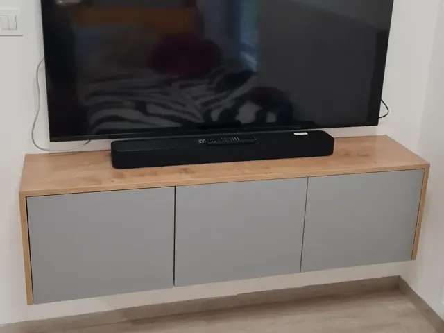
Pohištvo po meri
Dnevne sobe, TV omarice, komode, police, pisalne mize in otroške sobe — narejeno točno v centimeter, ki ga imate na voljo.
Paka 44, 3205 Vitanje · pon–pet 7.00–16.00
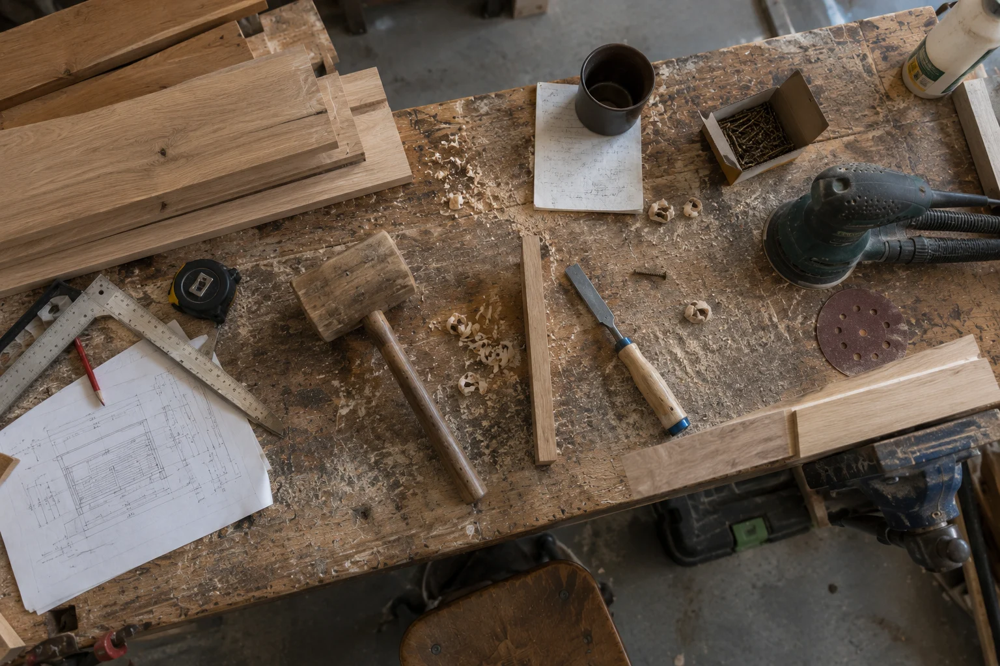
Pohištvo po meri, vgradne omare, kuhinje, stopnice in mize iz masivnega hrasta, lesene obloge, nadstreški in montaža. Domače mizarstvo iz Pake pri Vitanju, za Savinjsko, Koroško in Podravje.
Delamo z masivnim hrastom, orehom, macesnom, smreko in bukvijo. Izdelujemo pohištvo po meri, vgradne omare, stopnice, lesene obloge in nadstreške ter opravljamo montažo.
Mizarske in lesarske storitve
Od ene police do opreme celotne hiše. Vsak kos nastane po vaši meri — prilagojen prostoru, ne obratno. Spodaj so področja, ki jih pokrivamo najpogosteje.

Dnevne sobe, TV omarice, komode, police, pisalne mize in otroške sobe — narejeno točno v centimeter, ki ga imate na voljo.
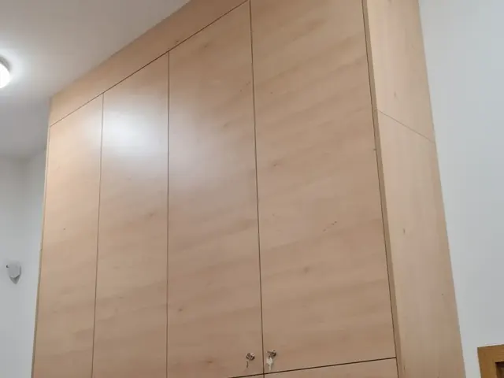
Omare do stropa, pod poševnino ali v nišo, predsobe s klopjo in ogledalom, garderobne sobe z notranjo razdelitvijo po vaših navadah.
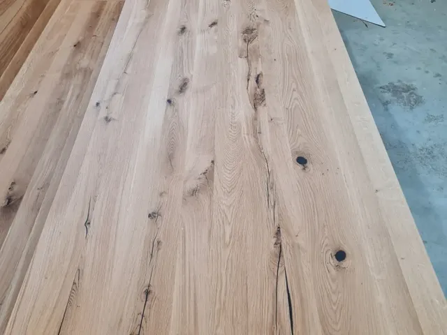
Kuhinjski elementi, delovni pulti iz masive ali laminata in prilagoditve obstoječih kuhinj ob prenovi. Z okovjem in vgradnjo aparatov.
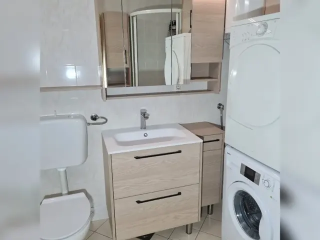
Omarice pod umivalnik, viseče in visoke omarice, omarice z ogledalom in LED osvetlitvijo — iz materialov, ki prenesejo vlago.
Postelje po meri z vgrajenimi nočnimi omaricami, LED osvetlitvijo in prostorom za posteljnino. Vzglavja iz lesa ali oblazinjena.
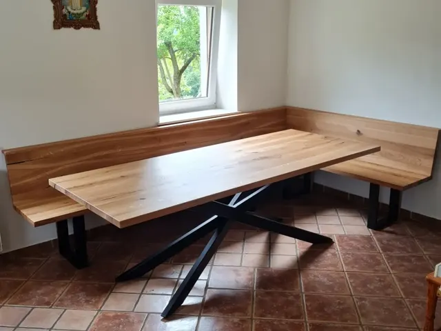
Jedilne mize iz masivnega hrasta ali oreha, kotne klopi, delovni pulti in police. Grče zalijemo z epoksi smolo, robove ročno obdelamo.
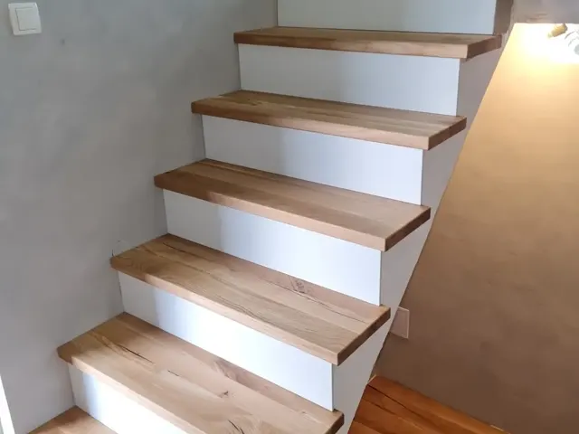
Nastopne plošče iz masivnega hrasta na obstoječo betonsko konstrukcijo, obloge stopnic, ograje in podesti.
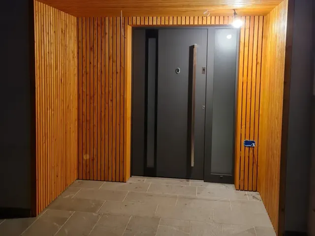
Lamelne obloge sten in stropov v notranjosti, lesene fasadne obloge, obloge vhodov in nadstreškov iz macesna ali smreke.
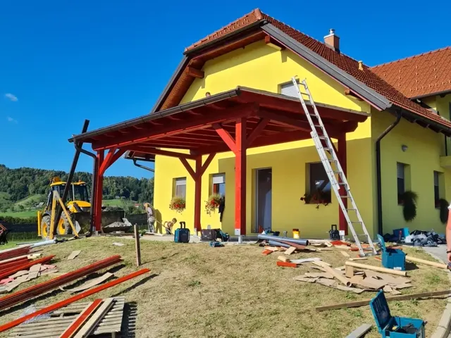
Nadstreški za avto in vhod, pergole, lesene ograje in vrtne konstrukcije iz impregniranega lesa — z izdelavo in montažo na objektu.
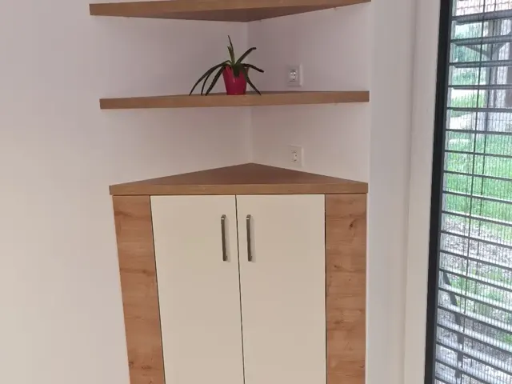
Montaža kupljenega pohištva in kuhinj, vgradnja notranjih vrat in stavbnega pohištva, zamenjava okovja ter manjša mizarska popravila.
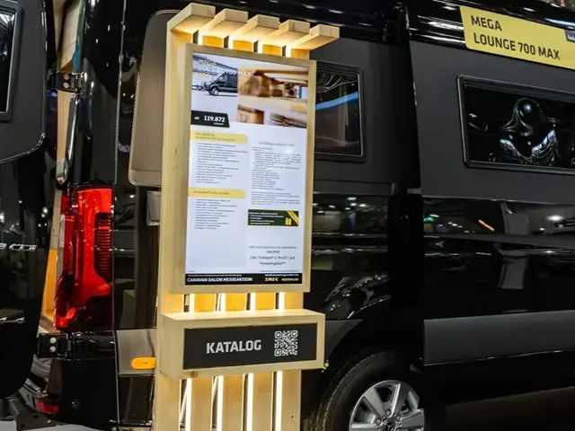
Pulti, razstavna stojala, stojala za zaslone, garderobne omare za zaposlene in sejemska oprema iz lesa — za trgovine, pisarne in razstave.
Večina naročil se začne z eno samo fotografijo prostora in nekaj merami. Pošljite jih — povemo, kaj se da narediti.
Povprečna ocena na Googlu
Področij mizarskih storitev
Fotografij opravljenih del
Cena ogleda, izmere in ponudbe
Kako poteka
Brez presenečenj in brez vmesnih posrednikov. Ves čas veste, kje smo, kaj sledi in koliko bo stalo.
Pokličete, pišete SMS ali izpolnite obrazec. Že opis in fotografija prostora pogosto zadostujeta za prvo oceno.
Pridemo na objekt, natančno izmerimo prostor in preverimo posebnosti — poševnine, inštalacije, neravne stene.
Pripravimo predlog rešitve s skico, izborom materialov in pisno ponudbo s končno ceno. Brez skritih postavk.
Skupaj izberemo vrsto lesa ali dekor, barvo, ročaje in okovje. Pokažemo vzorce, da se odločate po občutku, ne po katalogu.
Razrez, oblikovanje robov, brušenje in površinska obdelava. Grče v masivi zalijemo, robove ročno zaključimo.
Pripeljemo, montiramo in za sabo pospravimo. Skupaj pregledamo izdelek, nastavimo vrata in predamo v uporabo.
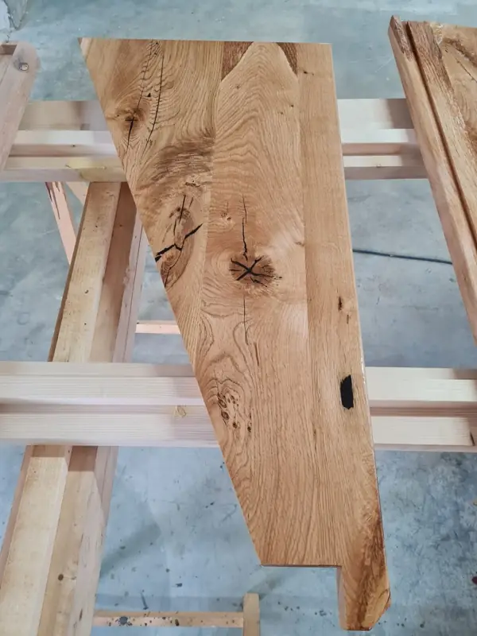
O nas
Mizarske storitve in montaža, Matjaž Pesjak s.p. je majhno mizarstvo s sedežem v Paki 44 pri Vitanju. Delamo tisto, kar je pri velikih proizvajalcih izgubljeno — poslušamo, izmerimo in izdelamo za konkreten prostor, ne za povprečje.
Ker je mizarstvo majhno, je pot od ideje do izdelka kratka. Isti človek, ki pride na ogled in vam pripravi ponudbo, kos tudi izdela in ga na koncu montira. Ni prelaganja odgovornosti med prodajalcem, proizvodnjo in monterjem — če je kaj narobe, veste, koga poklicati.
Materiali
Vsaka vrsta lesa ima svoj značaj, ceno in namen. Na ogledu povemo, kaj se za vaš projekt najbolj splača — in kaj ne.
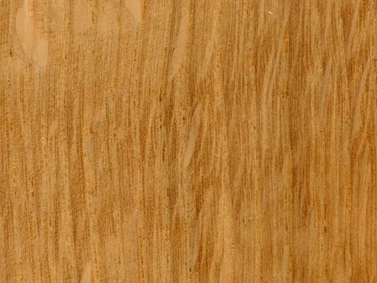
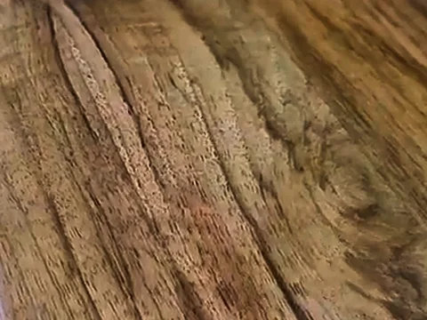
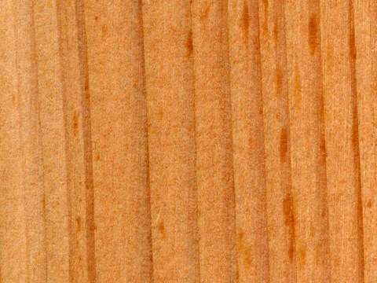
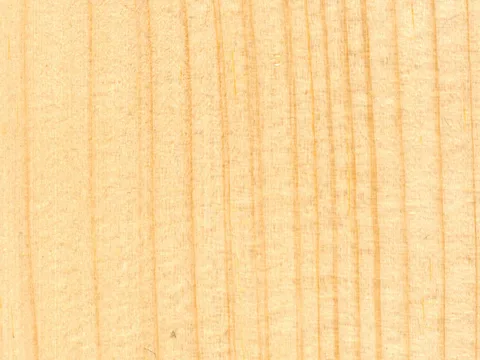
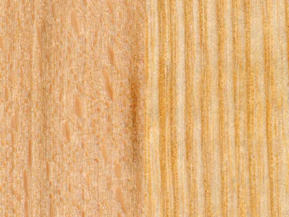
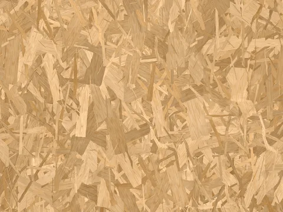
Galerija
Vse fotografije so z naših objektov. Kliknite na sliko za večji prikaz — med njimi se premikate s puščicami.

Mnenja strank
Ocene na Google Zemljevidih so javne in jih ne moremo urejati — prikazujemo jih točno takšne, kot so objavljene.
Kje delamo
Sedež imamo v Paki 44 pri Vitanju, na delo pa se odpravimo po celotni okolici. Če vašega kraja ni na seznamu, vseeno pokličite — pot se pogosto izide.
Pogosta vprašanja
Cena je odvisna od velikosti, izbranega materiala, okovja in zahtevnosti izdelave. Masivni hrast je dražji od ivernih plošč z dekorjem, vgradna omara v poševni steni pa zahteva več dela kot omara ob ravni steni. Po brezplačnem ogledu in izmeri prejmete pisno ponudbo s končno ceno — brez skritih stroškov in brez obveznosti.
Da. Prvi ogled, izmera na objektu in priprava ponudbe so brezplačni in vas k ničemer ne zavezujejo. Pokličite na 031 425 703 in se dogovorimo za termin, ki vam ustreza.
Manjši izdelki, kot so kopalniška omarica ali police, so običajno narejeni v nekaj dneh do enega tedna po potrditvi ponudbe. Večji projekti — garderobne omare, stopnice, oprema celotnega stanovanja — zahtevajo več tednov, odvisno tudi od dobavnih rokov materiala. Točen rok je vedno zapisan v ponudbi.
Sedež je v Paki 44 pri Vitanju, delamo pa po Savinjski, Koroški in Podravski regiji: Vitanje, Zreče, Slovenske Konjice, Oplotnica, Mislinja, Slovenj Gradec, Velenje, Šoštanj, Vojnik, Dobrna, Celje, Šentjur, Žalec, Slovenska Bistrica in Maribor. Za večje projekte se dogovorimo tudi širše — vprašajte.
Delamo z masivnim hrastom, orehom, macesnom, smreko, bukvijo in jesenom, prav tako z ivernimi in MDF ploščami v dekorju lesa ali barvi po izbiri. Za zunanje obloge, nadstreške in ograje uporabljamo impregniran ali termično obdelan les, ki prenese vremenske vplive. Katera možnost je za vas najbolj smiselna, povemo na ogledu.
Da. Poleg lastne izdelave prevzamemo montažo kupljenega pohištva in kuhinj, vgradnjo notranjih vrat in stavbnega pohištva, zamenjavo okovja ter manjša mizarska popravila.
Da. Izdelujemo pulte, razstavna stojala, stojala za zaslone, garderobne omare za zaposlene in drugo opremo za trgovine, pisarne in sejemske predstavitve — tudi po načrtu vašega oblikovalca.
Za izdelavo in montažo velja zakonsko določena garancija, za vgrajeno okovje pa garancija proizvajalca. Natančni pogoji so zapisani na ponudbi oziroma na računu. Če se v tem času kaj zamakne ali zaškripa, pridemo pogledat.
Kontakt
Najhitreje gre po telefonu — pogosto že v prvem pogovoru povemo, ali je projekt izvedljiv in v kakšnem cenovnem razredu se giblje.
Zemljevid Google Zemljevidov se naloži šele, ko dovolite piškotke tretjih oseb, saj drugače Google beleži vaš obisk.